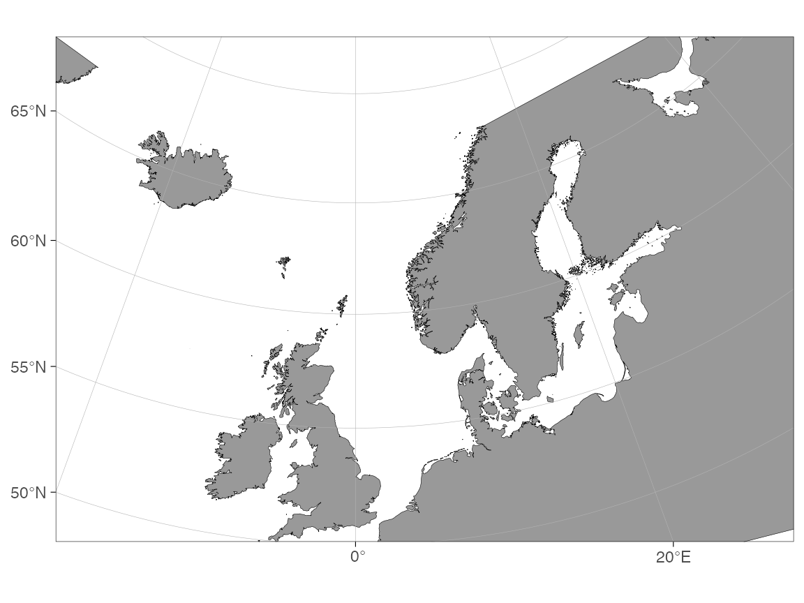

Adding graphical elements
Mikko Vihtakari (Institute of Marine Research)
29 May, 2026
Source:vignettes/adding-graphical-elements.Rmd
adding-graphical-elements.RmdA basemap() is an ordinary ggplot2 object:
anything you can add to a ggplot() with +
works on a basemap too. This article collects two graphical elements
that come up often in oceanography but need a little care on projected
maps:
- Ocean-current arrows drawn over a map.
- Pie charts (scatter pies) placed at geographic positions.
The recurring theme is coordinates. On a
decimal-degree map you plot in longitude/latitude directly. On a
projected map (polar regions, custom crs) the axes
are in metres, so geographic coordinates must be transformed with
transform_coord() first. Every recipe below shows both
cases.
Ocean-current arrows
There are two common situations: you have a velocity
field (u/v components on a grid) and
want a quiver plot, or you have hand-drawn schematic
arrows (the “Figure 1” style arrows that summarise the general
circulation of a region).
A velocity field as a quiver plot
The pattern is: thin the grid to a drawable density, scale the arrow
length, and draw with geom_segment(). The example uses a
small synthetic field so it runs without any download.
set.seed(1)
grd <- expand.grid(lon = seq(-15, 25, by = 4),
lat = seq(52, 68, by = 2))
grd$u <- 0.6 * cos(grd$lat / 8) # eastward component (m/s)
grd$v <- 0.3 * sin(grd$lon / 6) # northward component (m/s)
scale <- 2 # degrees drawn per m/s -- tune to taste
grd$lon_end <- grd$lon + grd$u * scale
grd$lat_end <- grd$lat + grd$v * scale
basemap(limits = c(-20, 30, 50, 70)) +
geom_segment(
data = grd,
aes(x = lon, y = lat, xend = lon_end, yend = lat_end),
arrow = arrow(length = unit(0.15, "cm")),
colour = "steelblue", linewidth = 0.4
)
On a projected map the axes are in metres, so transform the start points and add the velocity in projected units:
# transform_coord adds lon.proj / lat.proj in the map's CRS (metres)
grd <- transform_coord(grd, proj.out = 3995, bind = TRUE)
scale_m <- 1e5 # metres drawn per m/s
grd$lon_end_proj <- grd$lon.proj + grd$u * scale_m
grd$lat_end_proj <- grd$lat.proj + grd$v * scale_m
basemap(60) +
geom_segment(
data = grd,
aes(x = lon.proj, y = lat.proj, xend = lon_end_proj, yend = lat_end_proj),
arrow = arrow(length = unit(0.15, "cm")),
colour = "steelblue", linewidth = 0.4
)If your field lives in a NetCDF, read it with
stars::read_stars(), as.data.frame() it,
rename the coordinate/velocity columns, and thin with
df[seq(1, nrow(df), by = n), ] before the steps above.
Schematic “Figure 1” current arrows
For publication-style arrows summarising the circulation of a region,
the Barents-Sea-currents
repository distributes ready-made, editable arrows for the Barents and
Greenland Seas. The arrows are stored as a small set of nodes (decimal
degrees) grouped per arrow, with a type column
("Atlantic" / "Arctic").
The nodes are sparse on purpose (easy to edit); run an X-spline through each arrow to smooth it before plotting. The recipe below reproduces the classic two-colour current map on a ggOceanMaps basemap:
# 1. Read the editable node table (decimal degrees)
cur <- read.csv(paste0(
"https://raw.githubusercontent.com/MikkoVihtakari/",
"Barents-Sea-currents/master/tabular/barents_currents.csv"
))
# 2. Transform the nodes to the map projection (Arctic stereographic, metres)
cur <- transform_coord(cur, lon = "long", lat = "lat",
proj.out = 3995, bind = TRUE)
# 3. Smooth each arrow with an X-spline through its nodes.
# xspline() needs an open graphics device even with draw = FALSE, so
# open a null device for the calculation.
smooth_arrow <- function(d) {
grDevices::pdf(NULL); on.exit(grDevices::dev.off()); graphics::plot.new()
xs <- graphics::xspline(d$lon.proj, d$lat.proj, shape = -0.6, draw = FALSE)
data.frame(lon.proj = xs$x, lat.proj = xs$y,
group = unique(d$group), type = unique(d$type))
}
cur_smooth <- do.call(rbind, lapply(split(cur, cur$group), smooth_arrow))
# 4. Plot, mapping arrow colour to current type
basemap(limits = c(0, 50, 68, 83), shapefiles = "Arctic") +
geom_path(
data = cur_smooth,
aes(x = lon.proj, y = lat.proj, group = group, colour = type),
linewidth = 0.6,
arrow = arrow(type = "open", angle = 15, ends = "last",
length = unit(0.3, "lines"))
) +
scale_colour_manual(
name = "Current type",
values = c("Arctic" = "blue", "Atlantic" = "red")
)Key points:
- The CSV is in decimal degrees;
transform_coord(..., proj.out = 3995)moves it to the Arctic-stereographic CRS thatbasemap()uses for this region. On a decimal-degree map skip the transform and mapaes(x = long, y = lat)directly. -
graphics::xspline(..., shape = -0.6, draw = FALSE)returns smoothed coordinates without drawing anything — exactly what we feed togeom_path(). - Smooth in the projected coordinates (after
transform_coord()), not in degrees, so the curvature matches the map. - If you cite these arrows, see the citation in the source repository.
Pie charts on maps (scatter pies)
A frequent request is a small pie chart at each station summarising a
composition (species proportions, water-mass fractions, …). The cleanest
way to do this on a ggplot2 map is the scatterpie
package, whose geom_scatterpie() draws one pie per row of a
data frame from a set of value columns.
install.packages("scatterpie")Your data frame needs a position (x, y), an
optional radius, and one column per pie slice:
pies <- data.frame(
lon = c(5, 15, 25),
lat = c(56, 62, 68),
cod = c(40, 10, 70),
haddock = c(35, 30, 20),
saithe = c(25, 60, 10)
)
slices <- c("cod", "haddock", "saithe")On a decimal-degree map
Plot directly in longitude/latitude. r (the pie radius)
is in degrees here, because that is the unit of the map
axes:
library(scatterpie)
basemap(limits = c(-5, 35, 52, 72)) +
geom_scatterpie(
data = pies,
aes(x = lon, y = lat, r = 1.5), # radius in degrees
cols = slices,
colour = NA, alpha = 0.9
) +
scale_fill_brewer(palette = "Set2", name = "Species")On a projected map
Transform the pie centres first, and give r in the
projected unit (metres for the polar projections):
pies <- transform_coord(pies, proj.out = 3995, bind = TRUE)
basemap(60) +
geom_scatterpie(
data = pies,
aes(x = lon.proj, y = lat.proj, r = 1.5e5), # radius in metres
cols = slices,
colour = NA, alpha = 0.9
) +
scale_fill_brewer(palette = "Set2", name = "Species")Scaling pies by a total and adding a size legend
Map the radius to a variable (e.g. total catch) and add a radius
legend with geom_scatterpie_legend():
pies$total <- rowSums(pies[, slices])
pies$r <- 0.4 + 1.6 * pies$total / max(pies$total) # degrees
basemap(limits = c(-5, 35, 52, 72)) +
geom_scatterpie(
data = pies,
aes(x = lon, y = lat, r = r),
cols = slices, colour = NA, alpha = 0.9
) +
geom_scatterpie_legend(pies$r, x = -2, y = 70, n = 3) +
scale_fill_brewer(palette = "Set2", name = "Species")Tips:
- Keep
colour = NA(no slice borders) for small pies; borders dominate at map scale. -
geom_scatterpie()adds afillaesthetic, so it composes with the separatefillscale ggOceanMaps uses for bathymetry only if you add the pies after the bathymetry. If you need two independent fill scales (e.g. bathymetry and pie slices) use ggnewscale’snew_scale_fill()between the layers. - Choose the radius in the same unit as the map axes: degrees on a decimal-degree map, metres on a projected map. A radius that looks right on one map will be invisible (or fill the plot) on the other.
See also
- Cookbook — short copy-pasteable recipes, including a compact version of the current-arrow recipe.
-
User manual — projections and
transform_coord()in more depth.